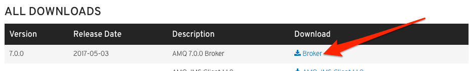

Installing the AMQ7 Broker
To begin, verify you have all of the prerequisites for these labs.
As a reminder, JBoss AMQ7 comes with four main components:
- AMQ7 Broker
- AMQ7 Interconnect Router
- AMQ7 Clients
- Management Console
The Broker comes with the management console, but the Interconnect Router and each individual client comes as a separate binary/download/installation.
We'll start by downloading the binaries for JBoss AMQ 7 Broker. In later labs, we'll get to the clients as well as the interconnect router
All of the components are available at the [Downloads page] of https://developers.redhat.com/products/amq/overview/. Navigate to that page and download the AMQ7 Broker:

Alternatively, if you are a current Red Hat customer, you can download the latest AMQ7 (and any associated patches) from the Red Hat Customer Portal. Even if you don't currently have JBoss AMQ subscriptions, you still have access to all of the Red Hat products and documentation for development/evaluation purposes.
Once you click one of the download links and you have the broker downloaded, navigate to your command line (Powershell, Bash, Cygwin, etc) and locate the newly downloaded file (ie, jboss-amq-7.0.0.redhat-1-bin.zip). You can move this .zip file to a location of your choosing (ie, /Users/ceposta/dev/labs or something).
Using your favorite unzip utility, unzip the jboss-amq-7.0.0.redhat-1-bin.zip binary file and navigate into the newly created directory:
$ unzip jboss-amq-7.0.0.redhat-1-bin.zip
$ cd jboss-amq-7.0.0.redhat-1
If you do a listing of the directory, you should see something similar to this:
$ ls -l
total 56
-rw-r--r--@ 1 ceposta staff 15K Apr 21 11:25 LICENSE
-rw-r--r--@ 1 ceposta staff 179B Apr 21 11:25 NOTICE
-rw-r--r--@ 1 ceposta staff 4.7K Apr 21 11:25 README.html
drwxrwxr-x@ 5 ceposta staff 170B May 3 06:55 bin
drwxrwxr-x@ 3 ceposta staff 102B May 3 06:55 etc
drwxrwxr-x@ 7 ceposta staff 238B May 3 06:55 examples
drwxrwxr-x@ 49 ceposta staff 1.6K Apr 21 11:48 lib
drwxrwxr-x@ 5 ceposta staff 170B May 3 06:55 schema
drwxrwxr-x@ 16 ceposta staff 544B May 3 06:55 web
Let's have a look at each folder:
bin-- Set up scripts for creating and managing brokersetc-- Bootstrap settings for runningartemiscommandsexamples-- handful of useful examples for getting started with AMQ7lib-- where the AMQ7 libs and dependencies are packagedschema-- config files schemasweb-- where the main web console configuration and libraries are stored
Creating a Broker
Up until this point, we've just download the main binaries and bootstrap configuration, but we still don't have a broker.
Note this is a bit different from AMQ6 if you've used that in the past. In AMQ6, the initial binary download was the broker itself. With AMQ7, we need to explicitly create a broker with the settings that we prefer.
Let's create a new folder in a location we choose (could be inside the installation folder if we'd like) called brokers and let's create a new broker inside of it:
$ mkdir brokers
$ ./bin/artemis create brokers/myfirstbroker
You'll be prompted to enter information that we've left off the command line. Fill in the user, password, and other information similar to this:
Creating ActiveMQ Artemis instance at: /Users/ceposta/dev/activemq/jboss-amq-7.0.0.redhat-1/brokers/myfirstbroker
--user: is a mandatory property!
Please provide the default username:
admin
--password: is mandatory with this configuration:
Please provide the default password:
--allow-anonymous | --require-login: is a mandatory property!
Allow anonymous access?, valid values are Y,N,True,False
Y
Auto tuning journal ...
done! Your system can make 14.71 writes per millisecond, your journal-buffer-timeout will be 68000
You can now start the broker by executing:
"/Users/ceposta/dev/activemq/jboss-amq-7.0.0.redhat-1/brokers/myfirstbroker/bin/artemis" run
Or you can run the broker in the background using:
"/Users/ceposta/dev/activemq/jboss-amq-7.0.0.redhat-1/brokers/myfirstbroker/bin/artemis-service" start
Congrats! You've just created your first AMQ7 broker :)
Note that some auto-tuning was done based on your environment. This is pretty handy when it comes to selecting the appropriate configuration for your persistent messaging use cases, but we'll come back to that in a subsequent lab.
If you're curious what command-line arguments you can pass to the create command, use the help command like this:
$ ./bin/artemis help <command>
So in this case, we'd list the help documentation for the create command like this:
$ ./bin/artemis help create
Starting our new broker
In the previous section, we created a new broker and in the output of the command we saw instructions for how to start the broker.
Before we do that, let's navigate to our new brokers/myfirstbroker folder and check out the directory structure and see what was created.
$ cd brokers/myfirstbroker
$ ls -l
drwxr-xr-x 4 ceposta staff 136B May 10 13:58 bin
drwxr-xr-x 2 ceposta staff 68B May 10 13:58 data
drwxr-xr-x 9 ceposta staff 306B May 10 13:58 etc
drwxr-xr-x 2 ceposta staff 68B May 10 13:58 log
drwxr-xr-x 2 ceposta staff 68B May 10 13:58 tmp
These are the folders in the newly created broker myfirstbroker. Let's see what they have in them:
bin-- scripts to control the lifecycle of our new brokerdata-- where all of the transaction/journal logs are stored for our messagesetc-- the configuration for our brokerlog-- the log output from running our brokertmp-- temporary disk usage
We'll start the new broker in the foreground with the following:
$ ./bin/artemis run
__ __ ____ ____ _
/\ | \/ |/ __ \ | _ \ | |
/ \ | \ / | | | | | |_) |_ __ ___ | | _____ _ __
/ /\ \ | |\/| | | | | | _ <| '__/ _ \| |/ / _ \ '__|
/ ____ \| | | | |__| | | |_) | | | (_) | < __/ |
/_/ \_\_| |_|\___\_\ |____/|_| \___/|_|\_\___|_|
Red Hat JBoss AMQ 7.0.0.redhat-1
14:07:31,490 INFO [org.apache.activemq.artemis.integration.bootstrap] AMQ101000: Starting ActiveMQ Artemis Server
14:07:31,540 INFO [org.apache.activemq.artemis.core.server] AMQ221000: live Message Broker is starting with configuration Broker Configuration (clustered=false,journalDirectory=./data/journal,bindingsDirectory=./data/bindings,largeMessagesDirectory=./data/large-messages,pagingDirectory=./data/paging)
14:07:31,578 INFO [org.apache.activemq.artemis.core.server] AMQ221013: Using NIO Journal
14:07:31,671 INFO [org.apache.activemq.artemis.core.server] AMQ221043: Protocol module found: [artemis-server]. Adding protocol support for: CORE
14:07:31,671 INFO [org.apache.activemq.artemis.core.server] AMQ221043: Protocol module found: [artemis-amqp-protocol]. Adding protocol support for: AMQP
14:07:31,671 INFO [org.apache.activemq.artemis.core.server] AMQ221043: Protocol module found: [artemis-hornetq-protocol]. Adding protocol support for: HORNETQ
14:07:31,672 INFO [org.apache.activemq.artemis.core.server] AMQ221043: Protocol module found: [artemis-mqtt-protocol]. Adding protocol support for: MQTT
14:07:31,672 INFO [org.apache.activemq.artemis.core.server] AMQ221043: Protocol module found: [artemis-openwire-protocol]. Adding protocol support for: OPENWIRE
14:07:31,672 INFO [org.apache.activemq.artemis.core.server] AMQ221043: Protocol module found: [artemis-stomp-protocol]. Adding protocol support for: STOMP
14:07:31,716 INFO [org.apache.activemq.artemis.core.server] AMQ221034: Waiting indefinitely to obtain live lock
14:07:31,717 INFO [org.apache.activemq.artemis.core.server] AMQ221035: Live Server Obtained live lock
14:07:31,865 INFO [org.apache.activemq.artemis.core.server] AMQ221003: Deploying queue DLQ
14:07:31,931 INFO [org.apache.activemq.artemis.core.server] AMQ221003: Deploying queue ExpiryQueue
14:07:32,733 INFO [org.apache.activemq.artemis.core.server] AMQ221020: Started NIO Acceptor at 0.0.0.0:61616 for protocols [CORE,MQTT,AMQP,STOMP,HORNETQ,OPENWIRE]
14:07:32,735 INFO [org.apache.activemq.artemis.core.server] AMQ221020: Started NIO Acceptor at 0.0.0.0:5445 for protocols [HORNETQ,STOMP]
14:07:32,737 INFO [org.apache.activemq.artemis.core.server] AMQ221020: Started NIO Acceptor at 0.0.0.0:5672 for protocols [AMQP]
14:07:32,739 INFO [org.apache.activemq.artemis.core.server] AMQ221020: Started NIO Acceptor at 0.0.0.0:1883 for protocols [MQTT]
14:07:32,741 INFO [org.apache.activemq.artemis.core.server] AMQ221020: Started NIO Acceptor at 0.0.0.0:61613 for protocols [STOMP]
14:07:32,741 INFO [org.apache.activemq.artemis.core.server] AMQ221007: Server is now live
14:07:32,742 INFO [org.apache.activemq.artemis.core.server] AMQ221001: Apache ActiveMQ Artemis Message Broker version 2.0.0.amq-700005-redhat-1 [0.0.0.0, nodeID=ae7bf278-35c4-11e7-97d9-0a0027000001]
INFO | main | Initialized artemis-plugin plugin
INFO | main | Initialized dispatch-hawtio-console plugin
14:07:35,393 INFO [org.apache.activemq.artemis] AMQ241001: HTTP Server started at http://localhost:8161
14:07:35,394 INFO [org.apache.activemq.artemis] AMQ241002: Artemis Jolokia REST API available at http://localhost:8161/jolokia
Yay! We've got our broker installed and running!
Take a quick glance at the log output and note a few things:
- The location of our transaction logs and cluster configuration
- We're using the NIO Journal for persistence
- We have a single port,
61616that can accept connections for multiple protocols (ie,CORE,MQTT,AMQP,STOMP,HORNETQ,OPENWIRE - We have individual ports for each protocol as well
- We see that the web console has been started at
http://localhost:8161 - We see that the Jolokia (a JMX over REST) service has been started at
http://localhost:8161/jolokia
That's it for this lab!
To learn more about getting started, see the product documentation at the Red Hat support portal!